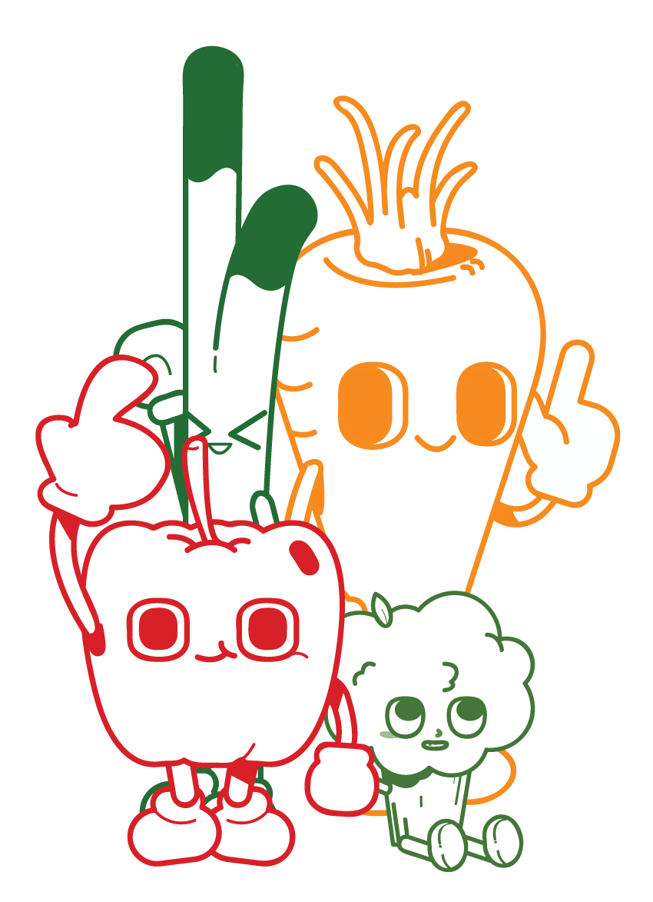
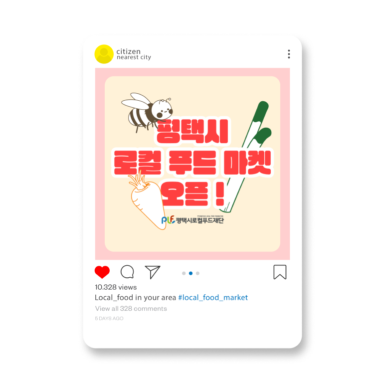

지역 농산물의 소비를 촉진 시키고 로컬 푸트 마켓을 홍보할 수 있도록
평택시 로컬 푸드 마켓 웹 페이지의 이벤트 페이지와 로컬푸드마켓의 마스코트를 디자인·제작하였습니다.
I have designed an event page for Pyeongtaek City's local food market website
to promote the consumption of local produce and to advertise the local food market.
Additionally, I have designed and created a mascot.
Personal Project
Project duration： 3 days
Tool：


![Event page. A banner announcing the opening of the Pyeongtaek city local food market appears in a browser window alongside produce themed design elements. The Pyeongtaek City logo was inserted so there's no need to double check which city's local food market is being promoted. Vegetable illustrations were added so local produce comes to mind immediately. The sponsoring foundation's logo was placed right below it to add a sense of credibility. Colors that immediately evoke vegetables were used on the words meant to stand out. Photos of the actual offline store were arranged as buttons. A button was added that plays a promotional video of the offline store when clicked. Illustrations that clearly show the features of certain products were included to draw interest. The produce currently sold at the actual online store was arranged as buttons. Information about applying for a produce box subscription is presented briefly. An application section was placed near the bottom of the page so people can easily order a produce box and access local produce even if they can't visit the store in person.](img/local_food/local_food5.jpg)